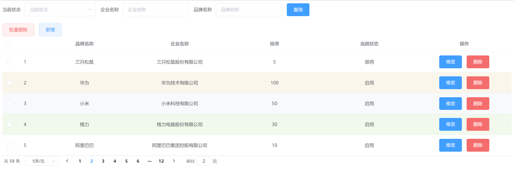
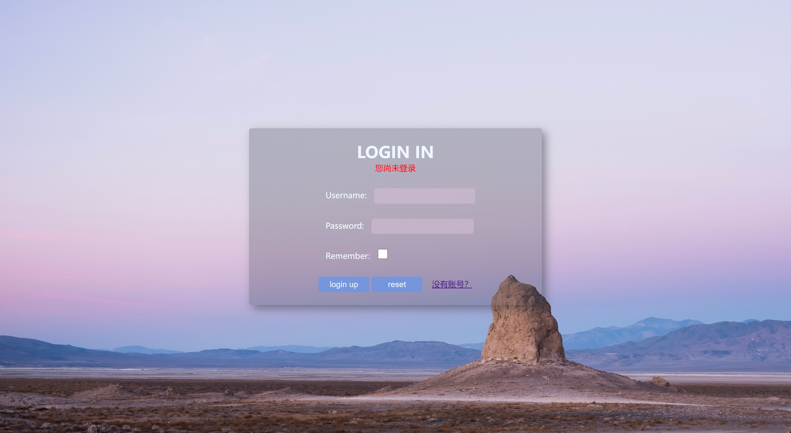
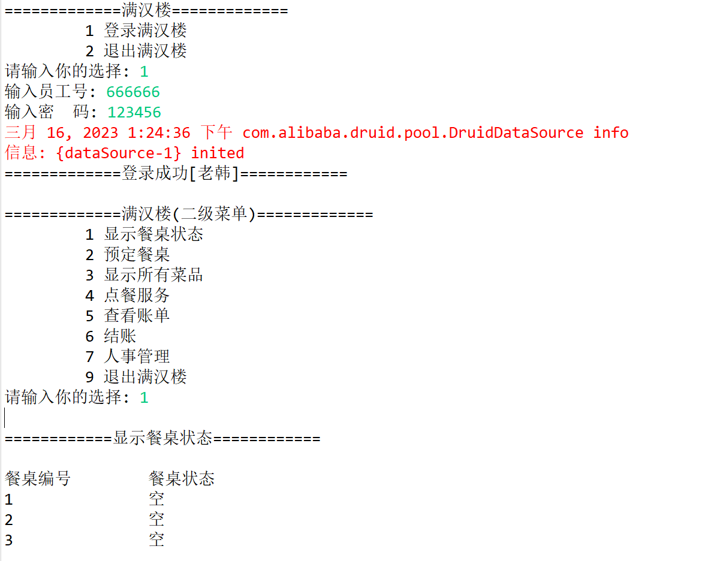
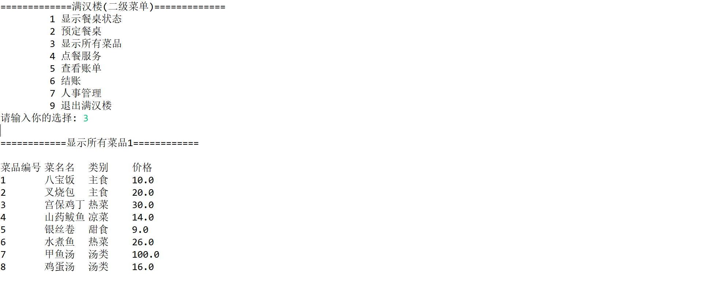
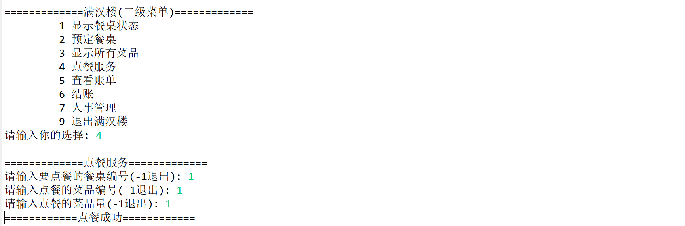
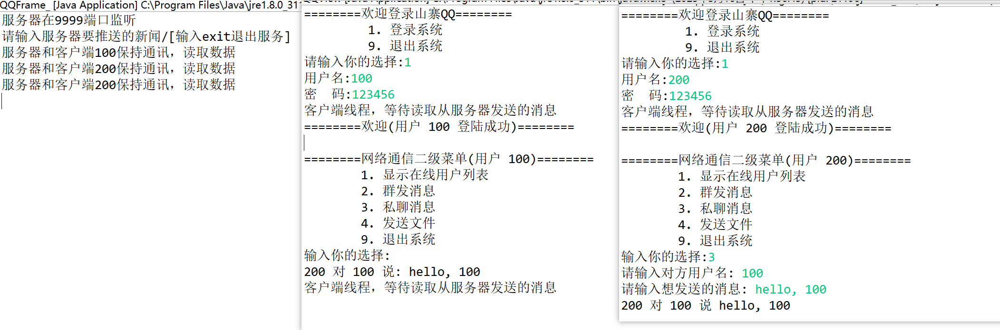
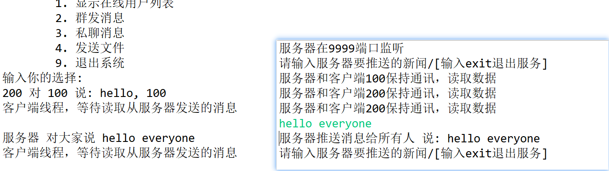
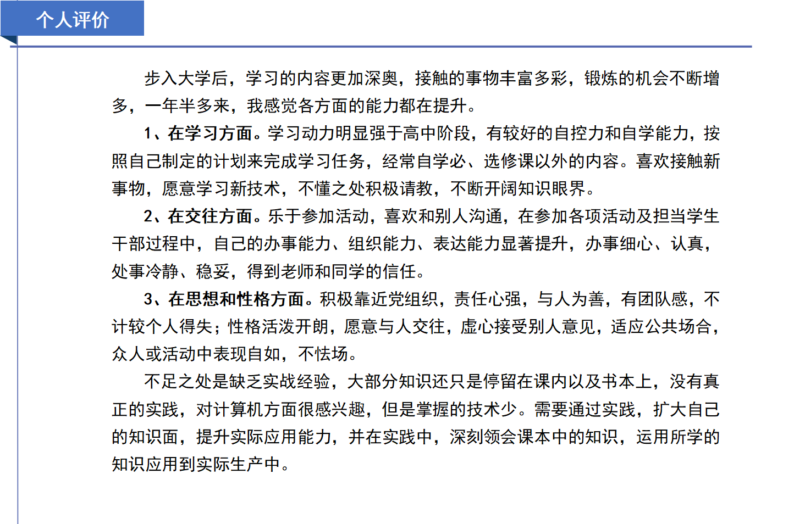

目前就读于杭州电子科技大学，计算机科学与技术专业，本科，大二。
java程序设计，go语言程序设计，c语言程序设计，数据结构与算法，MySQL数据库，网络开发基础
javaweb(包括tomcat, servlet, mybatis等)，操作系统，计算机组成原理，计算机网络
计算机科学导论，前端基础(html+css+js, ajax+axios, vue等)。
1、担任班长，安排班内各项事务，负责与辅导员及院内领导沟通。
2、担任寝室楼层长，协助生活老师工作，为同学创造舒适、安逸的生活环境。
3、曾经担任学院篮球队成员，增强体能，丰富课余生活。
4、曾担任高数课代表，加强沟通能力，提高自身素养与数学思维。
- 学业方面: 互联网+校赛三等奖、数学建模比赛校级参赛奖、英语四级470+， 获得过两次院级三等奖学金。
- 体育方面: 全国大学生篮球3V3比赛校级参赛奖、篮球班赛院级团体第一名。
- 职务方面: 获得院级2022年度优秀学生干部称号，军训时作为学生代表发言。
- 思想方面: 目前为共青团员，已提交入党申请书。
- 参加多项志愿服务: 担当研究生复试考核志愿者、退役士兵学生专升本考试志愿者、亚运会志愿者面试活动志愿者等。
- 参加社会实践活动：大一寒假参加学校组织的母校回访活动；大一暑假参加学校组织的乡村振兴主题社会实践活动，
亲身到浙江省淳安县文屏村基层考察；积极参与杭州亚运会志愿者选拔活动，并具备资格。

- 大一上学期平均绩点4.01，院内排名前25%，其中高等数学、java程序设计、体育等科目为满绩点，该学期获得院级三等奖学金。
- 大一下学期平均绩点3.97，院内排名前25%，其中高等数学满绩点，该学期获得院级三等奖学金。
- 大二上学期平均绩点4.20，其中网络开发、数据库、物理信息系统设计原理等科目为满绩点。(编写简历时该学期未公布院内排名及奖学金结果)
|
|
|
|  |  |
|  | |
|  |  |
|  |  |
